Префектура Кагосима · Амами-Осима · отель
THIDA MOON на Амами-Осима: отель ткачей осима-цумуги с видом на священную скалу
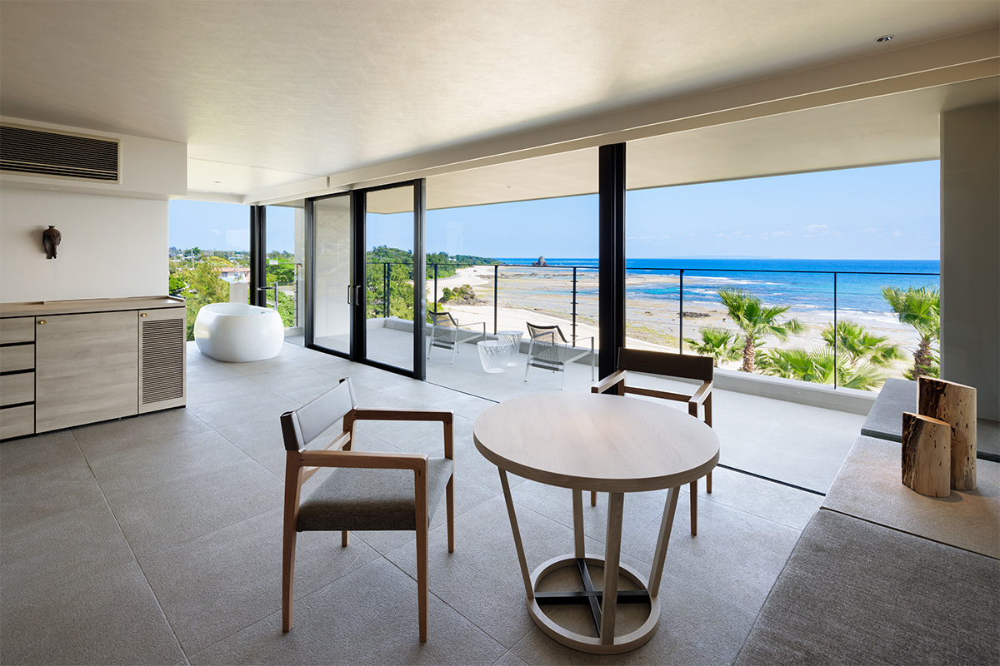
В десяти минутах езды от аэропорта Амами, на северном берегу острова, стоит отель THIDA MOON. Его открыли местные ткачи, и за пару дней здесь можно узнать об Амами-Осима больше, чем за неделю на пляже: о тканях, о богах, приходящих из моря, и о том, что здесь едят на Новый год.
Остров
Отель, который открыли ткачи
Амами-Осима лежит в тёплом море к югу от Кюсю. В субтропических лесах острова живёт множество редких растений и животных, а люди здесь веками жили бок о бок с природой и вырастили свою культуру: ремёсла, верования, кухню.
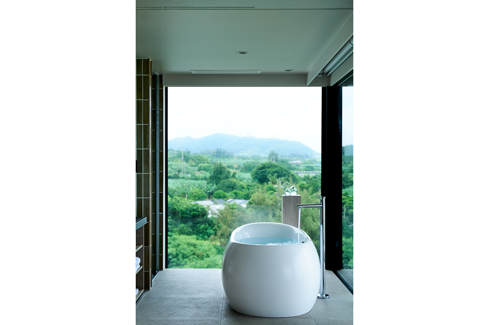
Главное ремесло острова это осима-цумуги, шёлковая ткань с историей в 1300 лет. Её глубокий чёрный цвет с блеском дают окраска грязью на рисовых полях острова, а пёстрые узоры ткут из нитей, окрашенных местными растениями. Работа идёт в десятки тонких этапов, и осима-цумуги называют одной из трёх великих тканей мира.
Чтобы гости могли узнать эту ткань поближе, в 2006 году отель открыла местная ткацкая мастерская. Позже его перестроил архитектор бюро GOSIZE и добавил три сюиты. При отеле работает музей осима-цумуги: здесь можно увидеть ткани по мотивам картин Иссона Танаки, писавшего природу Амами-Осима, и старинные исторические работы. На соседнем участке отель держит мастерскую, где гости сами пробуют окраску грязью и растительными красителями.
Большинство сотрудников отеля сами ткут осима-цумуги. Принимают здесь по-домашнему, без церемоний, и даже тот, кто равнодушен к кимоно, скорее всего уедет поклонником этой ткани.
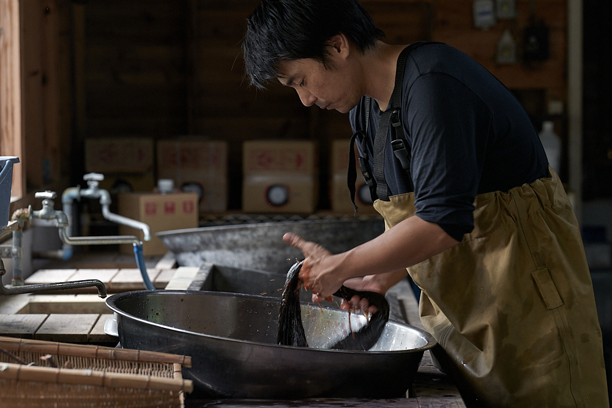
Номер
Сюита «Эн» с видом на скалу-божество
Амами-Осима называют «островом богов». Здесь живёт слово «Нэрия-Каная», так называют далёкий рай за морем. В огромных скалах у берега, которые зовут татэгами, островитяне видят место, где бог отдыхает по пути из-за моря на остров. Таким скалам поклоняются, но бог здесь не далёкий, а свой, соседский: татэгами стоят у многих прибрежных деревень. Над деревней Сэцута в районе Касари, где стоит THIDA MOON, возвышается скала Сэцута-татэгами и присматривает за жизнью её жителей.
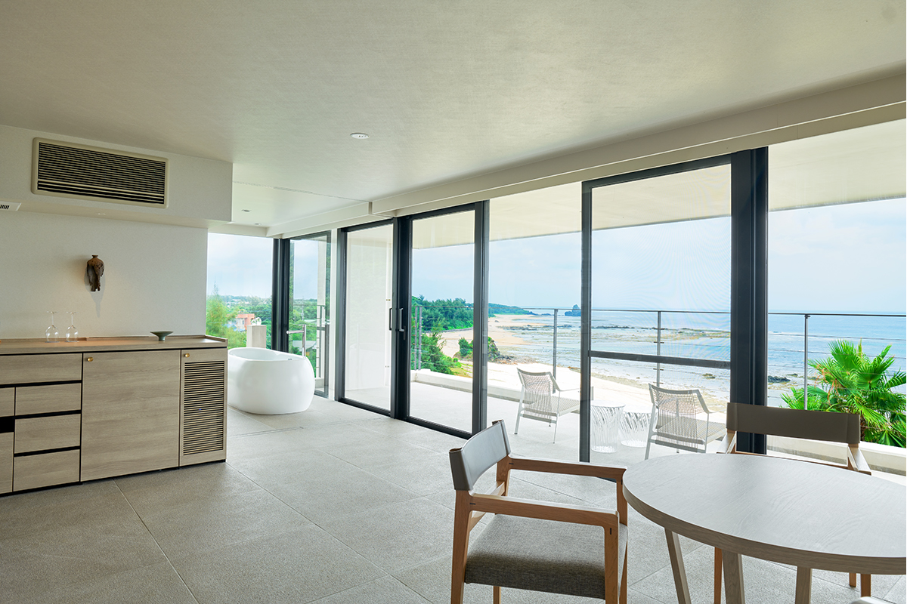
Сюита «Эн» устроена так, чтобы этим видом можно было любоваться как можно дольше: внизу Тихий океан, а в нём скала Сэцута-татэгами. Здесь большие окна и просторная терраса, а мебель нарочно простая. С утра до заката и потом, под луной, море и небо всё время меняют цвет.
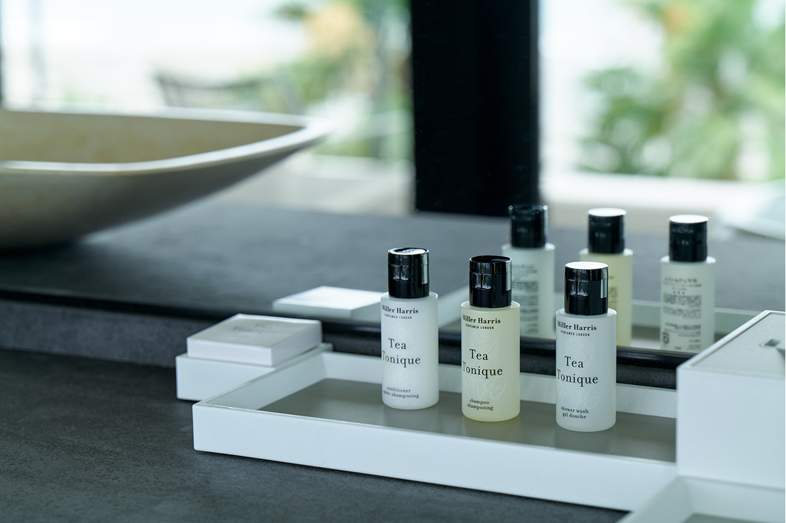
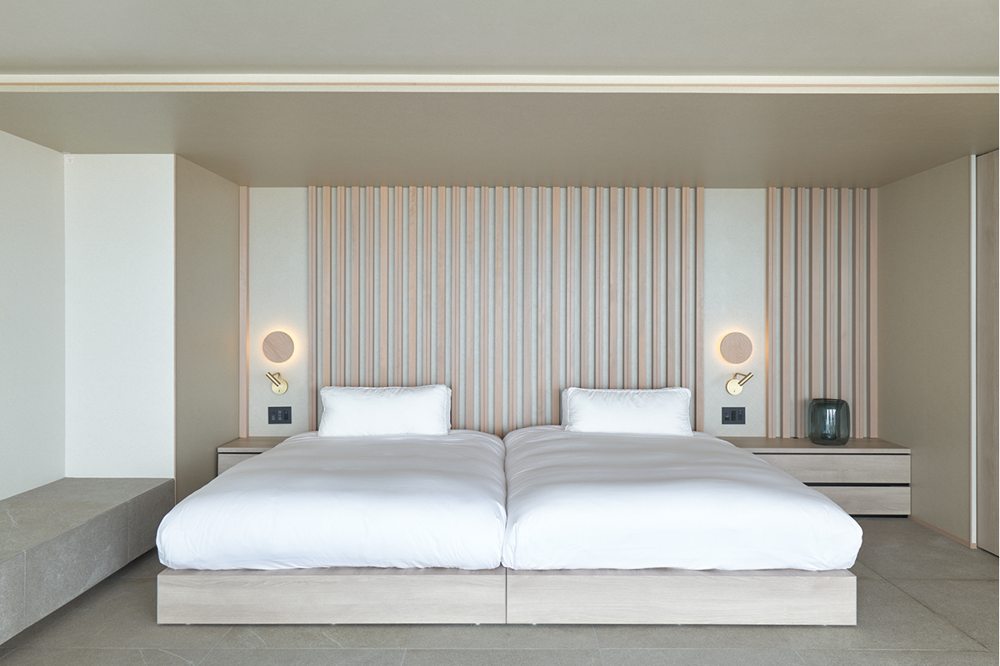
Кухня
Новогодние блюда острова в новом виде
Природу острова можно попробовать и на вкус, в ресторане отеля «Бистро Амами». Почти всё здесь местное: рыба и морепродукты из ближних вод, только что сорванные овощи. Повара берут островные блюда, например новогоднее угощение «сангон» или солёную свинину «сио-бута», которую раньше заготавливали впрок, и превращают их в современную авторскую японскую кухню с мягким, добрым вкусом.
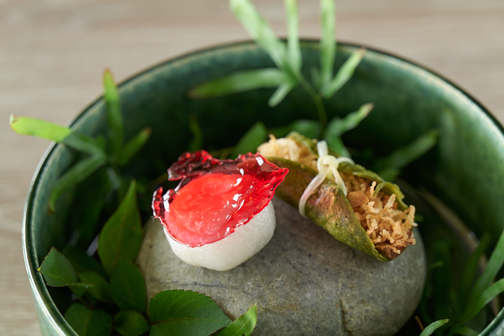
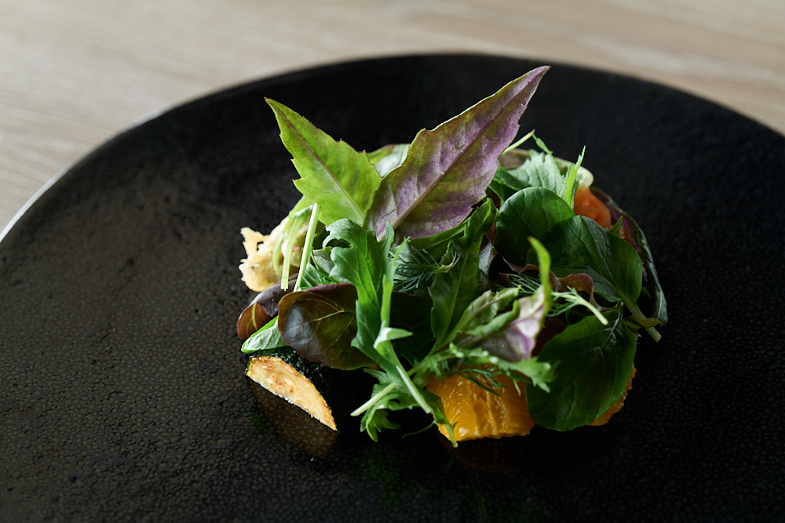
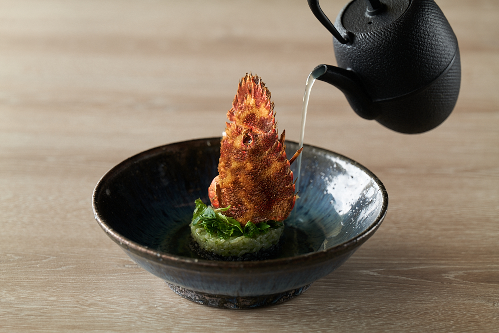
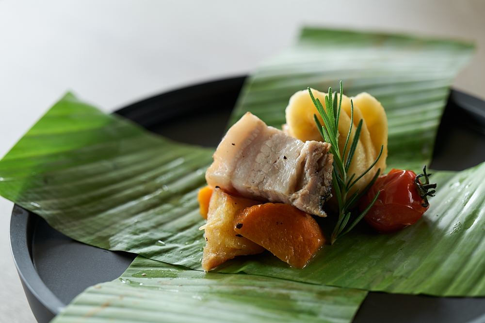
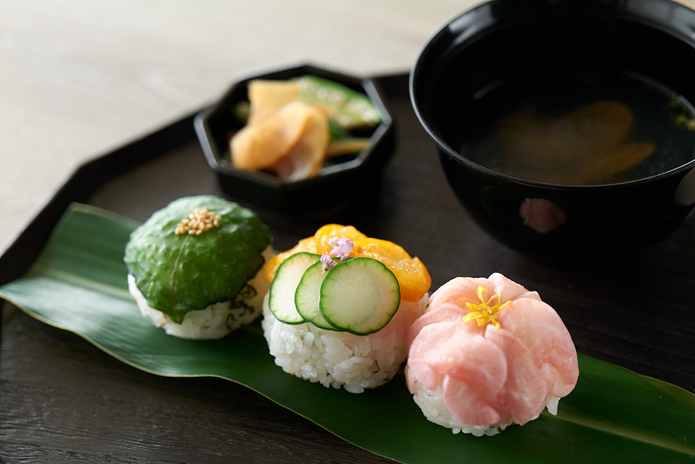
Завтрак тоже островной. Его готовят ткачихи осима-цумуги, которые славятся как хорошие кулинарки, а за основу берут то, что на Амами-Осима едят по утрам каждый день.
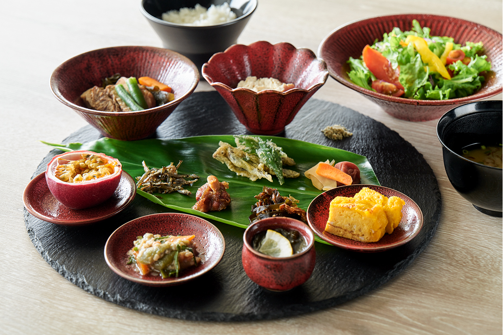
Сила и красота Амами-Осима и всё, что остров вырастил за века, в THIDA MOON живут и сегодня. Пожалуй, это и есть «Нэрия-Каная» нашего времени.
Музей
Увезти с собой искусство острова
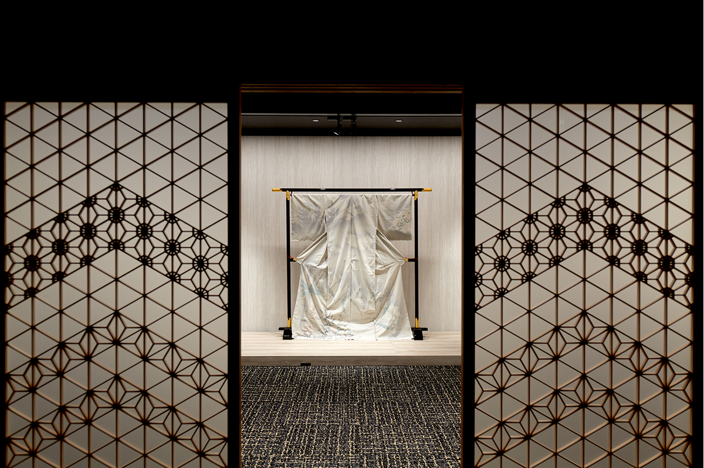
В музее осима-цумуги при отеле выставлены ткани с узором, преподнесённым императору Сёве, работы эпохи Тайсё и редкие вещи, которые сегодня уже не умеют делать. Традиционная окраска грязью и современные ткани собраны в одном месте, и видно, какой разной бывает осима-цумуги.
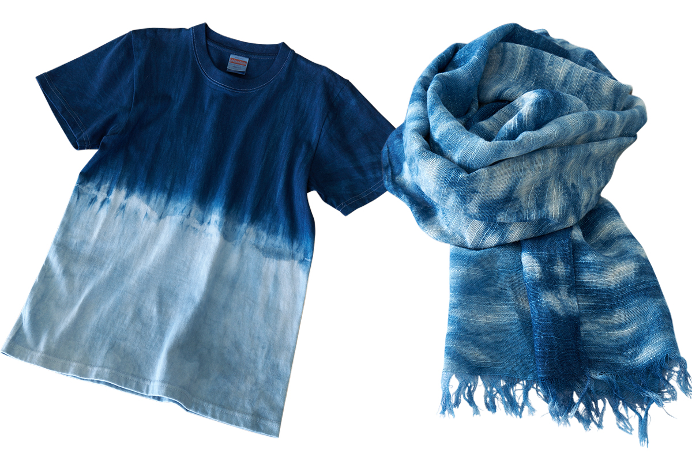
THIDA MOON
- Адрес
- префектура Кагосима, Амами, Касари, Тайра, 1260
- Телефон
- +81 997-63-0006
- Номера
- 25
- Цены / Вход
- от 129 800 иен за ночь с ужином и завтраком (сюита, с налогом и сервисным сбором)
- Заезд / выезд
- 15:00 / 11:00
- Как добраться
- около 10 минут на машине от аэропорта Амами, бесплатный трансфер